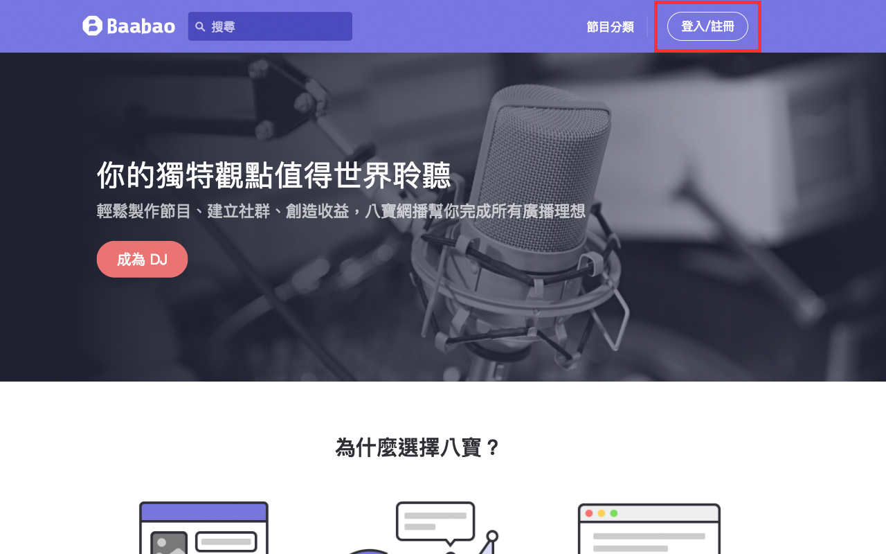

常見問題
節目製作
-
Q：如何成為八寶 DJ？
只要三步驟，輕鬆成為 DJ！
使用 Facebook 或 Google 帳號註冊或登入八寶會員。
點擊「成為 DJ」按鈕。
填寫製作人名稱，並勾選同意遵守條款，送出即可成為八寶 DJ。
-
Q：如何建立節目？
點擊導覽列的會員頭圖，於下拉選單中選擇「節目管理」。
點擊「建立新節目」按鈕。
填寫節目資訊，儲存即完成建立。
-
Q：如何新增單集？
點擊導覽列的會員頭圖，於下拉選單中選擇「節目管理」。
方法一：在節目列表上點擊「+」按鈕。
方法二：在節目列表點擊節目標題進入單集列表，點擊「新增單集」按鈕。
上傳音訊檔案並填寫單集資訊，儲存後即完成新增。
你可以點選「檢視」按鈕前往單集頁面。
-
Q：為什麼我無法上傳節目封面圖片？
請確認你的圖片格式是否為 .jpg、檔案大小在 2MB 內，並且長寬大於 400px；若為其他圖片格式，可以使用線上轉檔工具 https://convertio.co/ 轉檔再上傳。
-
Q：為什麼我無法上傳音訊檔案？
請確認你的音訊檔案格式是否為 .mp3；若為其他音訊格式，可以使用線上轉檔工具 https://convertio.co/ 進行轉檔再進行上傳。
-
Q：我要怎麼把單集嵌入在網站或部落格內？
方法一：在單集頁面中，點擊「分享」按鈕。
方法二：在節目管理的單集列表中，點擊「更多」按鈕並選擇「分享」。切換至嵌入分頁，選擇你想要的版型，複製嵌入碼。
將嵌入碼貼入你的網頁或部落格編輯器中，你仍可以調整嵌入播放器的尺寸。
-
Q：為什麼看不到我的節目頁面？
因為你的節目內還沒有單集，趕快上傳單集與聽眾分享吧！
-
Q：我需要用什麼器材錄音？
-
麥克風
你可以直接使用電腦或是耳機附帶的麥克風，但使用專業的指麥克風可以讓你的節目呈現最佳狀態。
-
耳機
在錄音時使用耳機可以觀察自己的談話與環境噪音，練習找到麥克風的最佳發聲位置，可依照自己的習慣調整。
如何選擇合適的耳機？
http://blog.baabao.com/2017/04/6.html
-
-
Q：我可以用什麼軟體錄音？
-
Windows 7
點選「開始」>「所有程式」>「附屬應用程式」>「錄音機」，開啟錄音程式。
-
Windows 10
點選「開始」，選擇「語音錄音機」，開啟錄音程式。
如果找不到程式，可以至 Microsoft 官網下載：http://bit.ly/2pChtjz
-
Mac
你可以選擇 Mac 內建的 QuickTime Player 或是 Garageband。
QuickTime Player 錄音教學請參考 https://briian.com/31075/。
※ 須注意：QuickTime 僅能儲存 .m4a 格式，請先轉檔成 .mp3 格式再到節目管理後台上傳。Garageband 錄音教學請參考
https://www.apple.com/tw/support/garageband/podcasts/recording/ -
或選用免費的線上錄音工具。
-
-
Q：我可以使用什麼軟體剪輯節目？
-
Windows
推薦你使用 Audacity 進行剪輯，或者選擇更專業的 Adobe Audition。
Audacity 由此下載
http://www.audacityteam.org/download/Audacity 操作教學
http://blog.baabao.com/2017/03/audacity.htmlAdobe Audition 由此下載
http://www.adobe.com/tw/products/audition.html -
Mac
推薦你使用 Mac 內建的 Garageband 直接進行錄製與剪輯，或者選擇更專業的 Adobe Audition。
Garageband 由此下載
https://www.apple.com/tw/mac/garageband/Adobe Audition 由此下載
http://www.adobe.com/tw/products/audition.html -
更多剪輯教學
剪輯：7 個小技巧教你快速編輯節目
http://www.adobe.com/tw/products/audition.html剪輯：掌握這些觀念，你也可以快速編輯網播節目
http://blog.baabao.com/2017/04/7.html
-
-
Q：如何知道我的節目收聽成效？
八寶會自動蒐集節目的收聽資料，包含收聽次數、收聽人數、收聽時間、時段、訂閱數，以及單集的各個區間的收聽率。幫助製作人運用這些資料來調整節目內容，以更符合聽眾期望或提高收聽率。
點擊導覽列的會員選單，選擇「數據統計」。

在數據統計首頁，你可以看到所有節目的累積數據。點擊下方的「節目標題」可以觀看該節目的詳細數據。
若你想觀看某則單集的數據，可以點擊單集列表的該則「單集標題」，即可觀看詳細的單集數據。
你也可以由節目管理的列表中，點擊「更多」按鈕並選擇「數據」，將可直接連結到該節目或單集的數據頁面。
-
Q：要怎麼讓更多人收聽我的節目？
-
優質的節目內容
好的廣播節目包括音質、表現與內容等條件，我們的建議有：
-
請在安靜的環境中使用專業麥克風錄製，因為電腦或手機內建的麥克風容易收到環境雜音。另外，在剪輯或預覽時要注意是否有電流、噴麥等雜訊聲，保持音量的平穩，不要爆音或忽大忽小。悅耳的音質更適合長時間收聽並且讓人心情愉悅。
如何調整完美音質
http://blog.baabao.com/2017/03/audacity.html如何在家打造安靜錄音室
http://blog.baabao.com/2017/04/3.html -
說話盡量咬字清晰，但不必故意模仿主播語調，自然、輕鬆大方即可。保持連貫有邏輯的談話，並適時帶點語氣與情緒，太平穩的語調容易讓人疲乏有倦意。
-
選擇近期的熱門話題會比較容易吸引聽眾，但切勿討論敏感、不雅的內容，以避免違反平台使用條款甚至法律。你也可以透過剪輯、加入一些可使用版權的音效與背景襯樂來豐富節目內容。讓節目的風格保有個性與特色，可以加強聽眾的印象，並區隔其他雷同的節目。
-
-
詳細的節目資訊
建立節目與單集時，請詳細地填寫標題、敘述、分類與標籤等資訊，聽眾會更瞭解你的節目內容，也更容易透過搜尋引擎找到你的節目。如果你的節目封面設計得很有特色，而非僅是風景或不雅的照片，甚至有專屬 Logo，必定會吸引聽眾的好奇以及加強節目的辨識度。
-
持續更新節目
盡可能保持固定、快速的更新頻率，但不用到每天更新或是更頻繁。你可以決定自己的更新頻率，例如每週一晚上，如此可以建立聽眾的收聽習慣。重要的是，不要忘記或長時間沒有更新，讓聽眾遺忘節目而流失。
-
分享與互動
更新節目單集後，記得將節目分享至社群媒體宣傳，如 Facebook、Twitter、LINE，或是嵌入至網站、部落格內，讓聽眾可以快速輕易的接觸到節目。並且與聽眾們保持良性的互動，會保持聽眾的黏著度。
-
節目收聽
-
Q：我可以在哪些平台收聽？
在電腦及行動裝置開啟八寶網頁皆可收聽節目，或是至 App Store 與 Google Play 下載 Baabao App。
-
iOs 用戶請往這邊 → http://apple.co/2ok0HJF
-
Android 用戶請往這邊 → http://bit.ly/2pbw3kI
-
-
Q：收聽節目需要先加入會員嗎？
不須加入會員即可免費收聽節目；但加入會員可擁有「訂閱節目」及「接續播放」的功能，收聽節目更省時更方便。
-
Q：播放單集時聽不到聲音
1. 確認你的播放硬體（喇叭、耳機）有正確接上播放裝置。
2. 確認系統的音源輸出是你的播放裝置，並且有開啟聲音。
3. 試著重新整理頁面並再次播放單集。 -
Q：找不到想找的節目？
你可以藉由「搜尋」或是從「節目分類」中找尋你想聽的節目，如果你喜歡該節目也可以訂閱，後續便可以從「我的訂閱」內找到該節目。
-
Q：找不到你訂閱的節目？
登入會員後，點擊右上角的頭圖，在下拉選單中選擇「我的訂閱」，即可找到訂閱的節目。
-
Q：我能不能離線收聽節目？
為了提供使用者更高的收聽彈性，八寶的節目都是線上串流服務。
-
Q：我可以在不同平台間接續收聽節目嗎？
可以，在不同平台都可以接續收聽未聽完的節目喔！
還是沒有解決你的問題嗎？請來信：hello@baabao.com